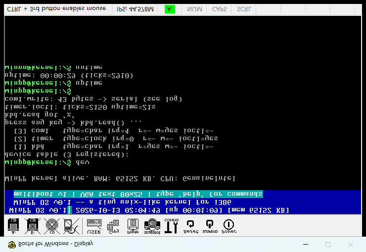
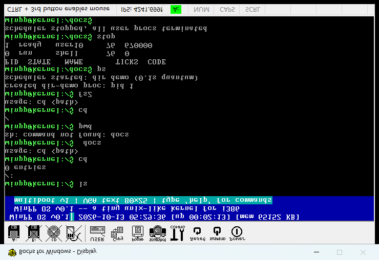

一句话意义：之前键盘、定时器、串口是"散落在各处的外设代码"；第七阶段把它们收进一张 设备表（device table），统一成 read / write / ioctl / irq 四个接口，中断按设备分发——外设第一次有了"正式编制"。全部 Bochs 实机 + 串口 + 截图验证通过。
| 命令 | 作用 |
|---|---|
| dev | 打印设备表（name/major/type/irq/能力）→ 按任意键走 kbd.read() → 调 timer.ioctl() 查状态 → 调 com1.write() 往串口写一行 |
[3b] device table ... [dev] registered 3 devices: [dev] kbd major=1 type=1 irq=1 r=1 w=0 io=0 [dev] timer major=2 type=2 irq=0 r=0 w=0 io=1 [dev] com1 major=3 type=1 irq=4 r=0 w=1 io=0 [timer] init divisor=11931 expect 100Hz
[dev] kbd read via device interface: 'z' # 键盘 read() 读到一个键（注入 'z'） [dev] timer ioctl ticks=2150 uptime=21 # 定时器 ioctl 查询状态 [dev] com1 write returned 43 bytes # 串口 write() 输出 43 字节（见上方原文）
uptime: 00:00:29 (ticks=2910) # 29 秒 = 2910 ticks ≈ 100Hz ✓ uptime: 00:00:42 (ticks=4242) # 42 秒 = 4242 ticks ≈ 100Hz ✓（间隔 13s ≈ +1300 ticks）


串口格式化只跳宽度数字、不跳 -，%-6s 被拆成字面字符 + 参数错位（major 变成指针值）。修正：格式化时跳过 '-' 标记。
键盘设备接口明明读到 'z'，串口却打印 'c'——因为 %c 无分支，格式串里的 'c' 被原样输出。修正：serial_printf 增加 %c 分支。实测后正确显示 'z'。
sync=none 下 Bochs 虚拟时钟按模拟速度全速跑：PIT 实测 ~32.6kHz（应为 100Hz），uptime 显示"1 小时"而真实只过了几分钟。修正：bochsrc 改 clock: sync=realtime，PIT 恢复真实 100Hz（串口核验 29s/2910 ticks）。